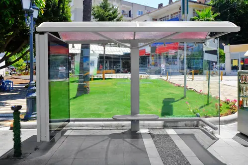
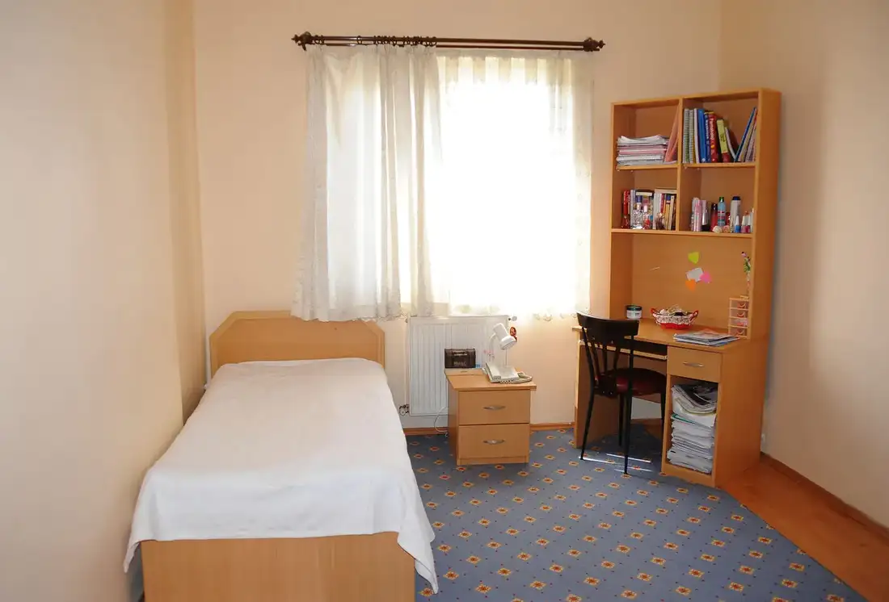
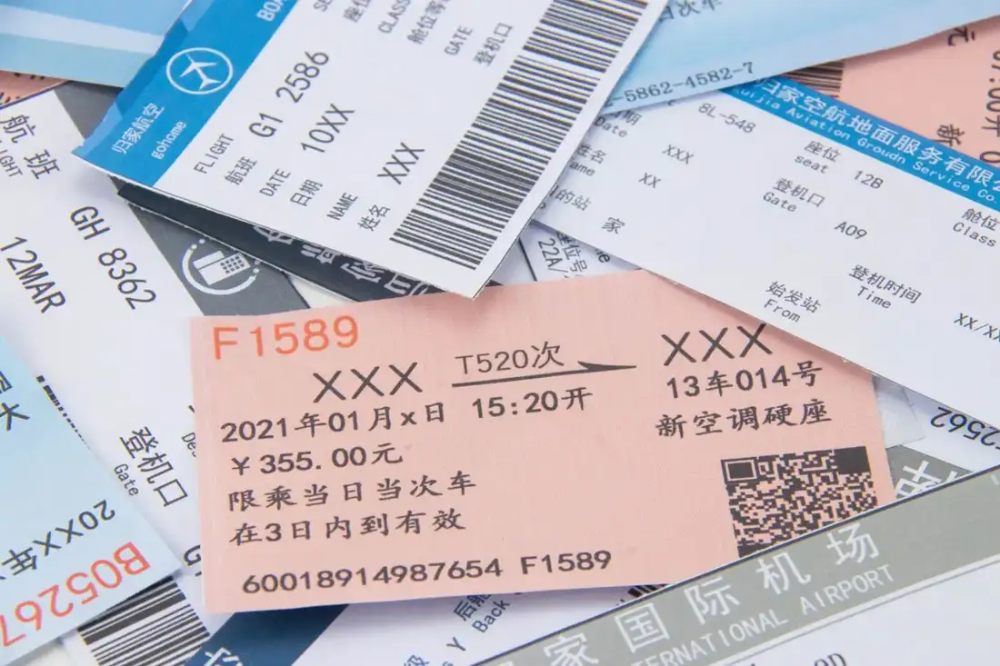

Giáo trình HSK 2 · Lesson 2还是打车去北大吧
Háishi dǎchē qù Běidà ba
Hay là đi taxi đến Bắc Đại đi
Mục tiêu bài khóa
Sau bài học, người học có thể vận dụng các điểm ngôn ngữ chính trong giao tiếp.
学校基本情况Giới thiệu thông tin cơ bản về trường học.
“多”表示概数Dùng 多 để nói số lượng ước chừng.
“还是……吧”Đưa ra lựa chọn hoặc lời đề nghị.
Khởi động · 热身
Chọn từ rồi chọn đúng hình ảnh tương ứng.
💡 Hãy chọn một từ trước.
Từ vựng · 生词
18 mục từ: 16 từ chính, tên riêng 北京大学 và cách hỏi lịch sự 请问. Chạm thẻ để xem ví dụ, cụm từ; bấm 🔊 để nghe từng câu.
公交车
gōngjiāochē
xe buýt
danh từChạm vùng trống để lật thẻ
坐公交车 · 等公交车
他每天坐公交车上班。 🔊Tā měitiān zuò gōngjiāochē shàngbān.
Anh ấy đi xe buýt đi làm mỗi ngày. 我在这儿等公交车，已经等了20分钟了。 🔊Wǒ zài zhèr děng gōngjiāochē, yǐjīng děng le èrshí fēnzhōng le.
Tôi chờ xe buýt ở đây, đã chờ 20 phút rồi. 但
dàn
nhưng
liên từChạm vùng trống để lật thẻ

今天下雨了，但不太冷。 🔊Jīntiān xià yǔ le, dàn bú tài lěng.
Hôm nay trời mưa, nhưng không lạnh lắm. 我会说中文，但我的中文不太好。 🔊Wǒ huì shuō Zhōngwén, dàn wǒ de Zhōngwén bú tài hǎo.
Tôi biết nói tiếng Trung, nhưng tiếng Trung của tôi chưa tốt lắm. 车站
chēzhàn
trạm xe; nhà ga
danh từChạm vùng trống để lật thẻ

公交车站
到北京大学的车站有点儿远。 🔊Dào Běijīng Dàxué de chēzhàn yǒudiǎnr yuǎn.
Trạm xe đi Đại học Bắc Kinh hơi xa. 我走路到车站坐公交车。 🔊Wǒ zǒulù dào chēzhàn zuò gōngjiāochē.
Tôi đi bộ đến trạm để đi xe buýt. 远
yuǎn
xa
tính từChạm vùng trống để lật thẻ

很远 · 不远 · 有点儿远
学校离我家很远。 🔊Xuéxiào lí wǒ jiā hěn yuǎn.
Trường học cách nhà tôi rất xa. 车站不远，走五分钟就到。 🔊Chēzhàn bù yuǎn, zǒu wǔ fēnzhōng jiù dào.
Trạm xe không xa, đi bộ năm phút là đến. 打车
dǎchē
bắt taxi
động từChạm vùng trống để lật thẻ
车站太远了，我们打车去吧。 🔊Chēzhàn tài yuǎn le, wǒmen dǎchē qù ba.
Trạm xe xa quá, chúng ta bắt taxi đi nhé. 我们一起打车去学校。 🔊Wǒmen yìqǐ dǎchē qù xuéxiào.
Chúng ta cùng bắt taxi đến trường. 还是
háishi
hay là; vẫn
phó từ / liên từChạm vùng trống để lật thẻ
还是……吧
今天下雨了，还是明天去跑步吧。 🔊Jīntiān xià yǔ le, háishi míngtiān qù pǎobù ba.
Hôm nay trời mưa rồi, hay là ngày mai hãy chạy bộ nhé. 太晚了，还是别喝咖啡了。 🔊Tài wǎn le, háishi bié hē kāfēi le.
Muộn quá rồi, tốt hơn là đừng uống cà phê nữa. 啊
a
a; à; quá
trợ từChạm vùng trống để lật thẻ
今天真冷啊！ 🔊Jīntiān zhēn lěng a!
Hôm nay lạnh thật đấy! 这件衣服真漂亮啊！ 🔊Zhè jiàn yīfu zhēn piàoliang a!
Bộ quần áo này đẹp thật đấy! 万
wàn
mười nghìn
số từChạm vùng trống để lật thẻ
一万 = 10.000
我们学校有一万人。 🔊Wǒmen xuéxiào yǒu yí wàn rén.
Trường chúng tôi có mười nghìn người. 你们公司有几万人？ 🔊Nǐmen gōngsī yǒu jǐ wàn rén?
Công ty các bạn có mấy vạn người? 名
míng
lượng từ cho người; tên
lượng từ / danh từChạm vùng trống để lật thẻ
一名 · 人名 · 书名
她现在还是一名学生。 🔊Tā xiànzài háishi yì míng xuésheng.
Hiện giờ cô ấy vẫn là học sinh. 那本书的书名是什么？ 🔊Nà běn shū de shūmíng shì shénme?
Tên cuốn sách đó là gì? 网上
wǎngshàng
trên mạng
danh từChạm vùng trống để lật thẻ
我在网上学习。 🔊Wǒ zài wǎngshàng xuéxí.
Tôi học trên mạng. 妈妈喜欢在网上买东西。 🔊Māma xǐhuan zài wǎngshàng mǎi dōngxi.
Mẹ thích mua đồ trên mạng. 外国
wàiguó
nước ngoài
danh từChạm vùng trống để lật thẻ
外国人 · 外国学生
白家月是外国人。 🔊Bái Jiāyuè shì wàiguó rén.
Bạch Gia Nguyệt là người nước ngoài. 学校里有很多外国学生。 🔊Xuéxiào lǐ yǒu hěn duō wàiguó xuésheng.
Trong trường có rất nhiều học sinh nước ngoài. 间
jiān
lượng từ cho phòng
lượng từChạm vùng trống để lật thẻ

一间
这间房间很小。 🔊Zhè jiān fángjiān hěn xiǎo.
Căn phòng này rất nhỏ. 这间教室里有三个人。 🔊Zhè jiān jiàoshì lǐ yǒu sān ge rén.
Trong phòng học này có ba người. 教室
jiàoshì
phòng học
danh từChạm vùng trống để lật thẻ
教室里 · 一间教室
他在教室里看书。 🔊Tā zài jiàoshì lǐ kàn shū.
Anh ấy đọc sách trong phòng học. 请问第二间教室在哪儿？ 🔊Qǐngwèn dì èr jiān jiàoshì zài nǎr?
Xin hỏi phòng học thứ hai ở đâu? 票
piào
vé
danh từChạm vùng trống để lật thẻ

车票 · 机票 · 电影票
最近飞北京的机票很贵。 🔊Zuìjìn fēi Běijīng de jīpiào hěn guì.
Gần đây vé máy bay đi Bắc Kinh rất đắt. 电影票多少钱？ 🔊Diànyǐngpiào duōshao qián?
Vé xem phim bao nhiêu tiền? 别
bié
đừng
phó từChạm vùng trống để lật thẻ
别走，等等我！ 🔊Bié zǒu, děngdeng wǒ!
Đừng đi, đợi tôi với! 下雨了，别去打篮球了。 🔊Xià yǔ le, bié qù dǎ lánqiú le.
Trời mưa rồi, đừng đi chơi bóng rổ nữa. 过来
guòlái
đến đây; qua đây
động từChạm vùng trống để lật thẻ
你可以过来接我一下吗？ 🔊Nǐ kěyǐ guòlái jiē wǒ yíxià ma?
Bạn có thể qua đây đón tôi một chút được không? 朋友过来找我。 🔊Péngyou guòlái zhǎo wǒ.
Bạn đến đây tìm tôi. 北京大学
Běijīng Dàxué
Đại học Bắc Kinh
danh từ riêngChạm vùng trống để lật thẻ
Gọi tắt: 北大 · Běidà
北京大学很大，有四万多名学生。 🔊Běijīng Dàxué hěn dà, yǒu sì wàn duō míng xuésheng.
Đại học Bắc Kinh rất lớn, có hơn bốn mươi nghìn sinh viên. 请问
qǐngwèn
xin hỏi
động từChạm vùng trống để lật thẻ
Dùng để mở đầu câu hỏi lịch sự
请问，这儿有到北京大学的公交车吗？ 🔊Qǐngwèn, zhèr yǒu dào Běijīng Dàxué de gōngjiāochē ma?
Xin hỏi, ở đây có xe buýt đến Đại học Bắc Kinh không? Bài khóa · 课文
Ảnh ngữ cảnh bên trái, nội dung và âm thanh gốc bên phải. Bài khóa 1–3 gồm đầy đủ 6 lượt thoại mỗi bài. Bài khóa 4 là đoạn văn.
Tương tác đóng vai
Chọn bài khóa 1–3 và nhân vật. Lời của vai đã chọn sẽ được ẩn; chỉ hiển thị chữ Hán.
Củng cố từ vựng
Lật đáp án từ vựng rồi hoàn thành câu hỏi đọc hiểu.
Câu hỏi đọc hiểu
Mỗi bài khóa có 2 câu hỏi theo thứ tự từ bài 1 đến bài 4. Hai câu cuối chọn Đúng hoặc Sai.
Mẫu câu cần nhớ: 这儿有到北京大学的公交车吗？北京大学有四万多名学生。我们还是打车去吧。